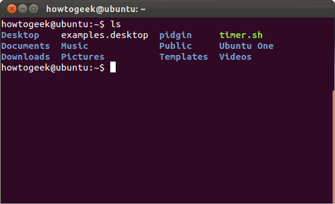
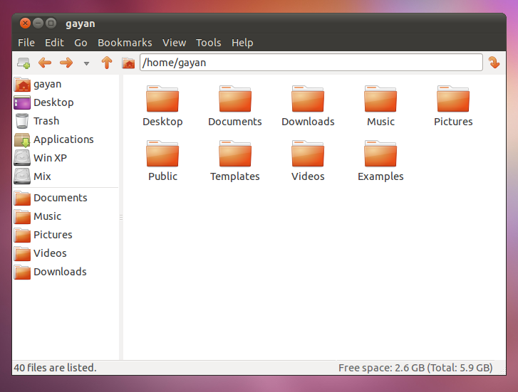

To open:
Menu Applications → Accessories → Terminal
or on keyboard Ctrl+Alt+t
Terminal waits for command with prompt ($ sign)
You type command + [Enter]
Terminal shows output
Terminal waits for next command
ls | list files |
ls -l | list files with more info |
cd path | change directory |
pwd | print working directory |
mkdir dir | make directory |
touch file | create empty file |
rmdir dir | remove directory |
rm file | remove file |
Same directories and files can be seen with
Can start other programs from the terminal too, e.g.:
$ chrome www.spiegel.de
$ atom
No prompt? Ctrl-C to interrupt
Use arrow keys ↑ and ↓ to repeat commands
Use [TAB] key to complete
https://devcenter.heroku.com/articles/static-sites-ruby (google for "static sites heroku")
Use your terminal skills to:
Make a change, deploy again (Updating)
Choose a nicer name (Renaming Apps)
<html>
<head>
...
</head>
<body>
<h1>A title</h1>
<p class="intro">A paragraph ...</p>
<p>Another paragraph ...</p>
...
</body>
</html>
h1 {
color: red;
}
p.intro {
font-weight: bold;
}
Good reference: Mozilla Developer Network
https://developer.mozilla.org/en-US/docs/Web/CSS/font-weight (google for "mdn font-weight")